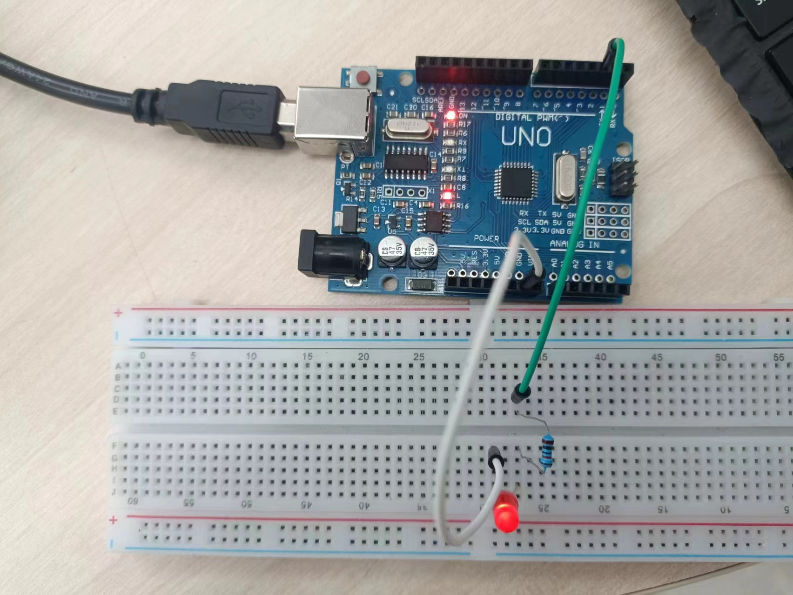
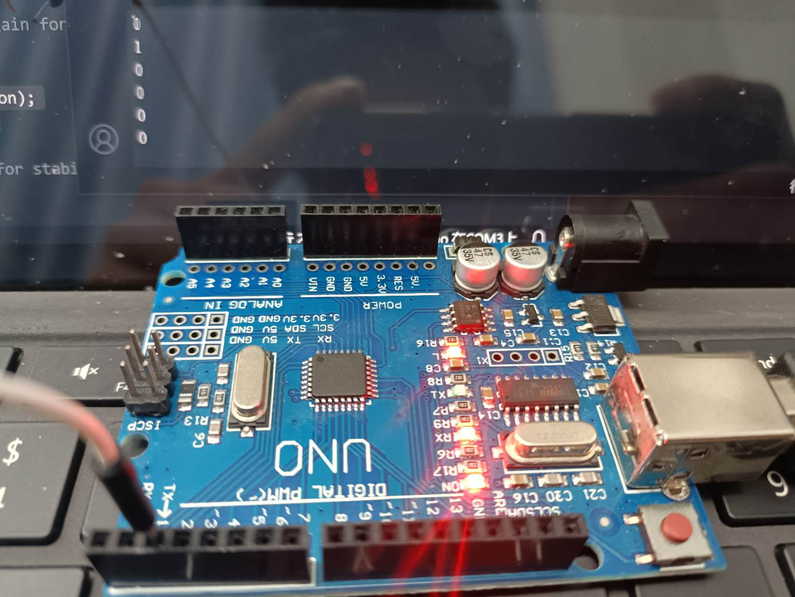
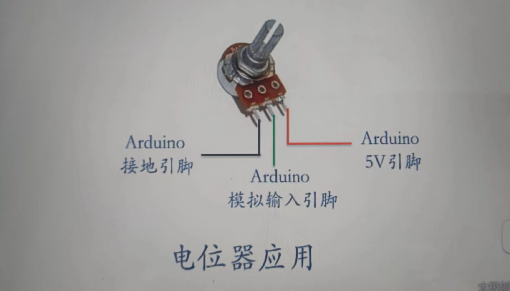
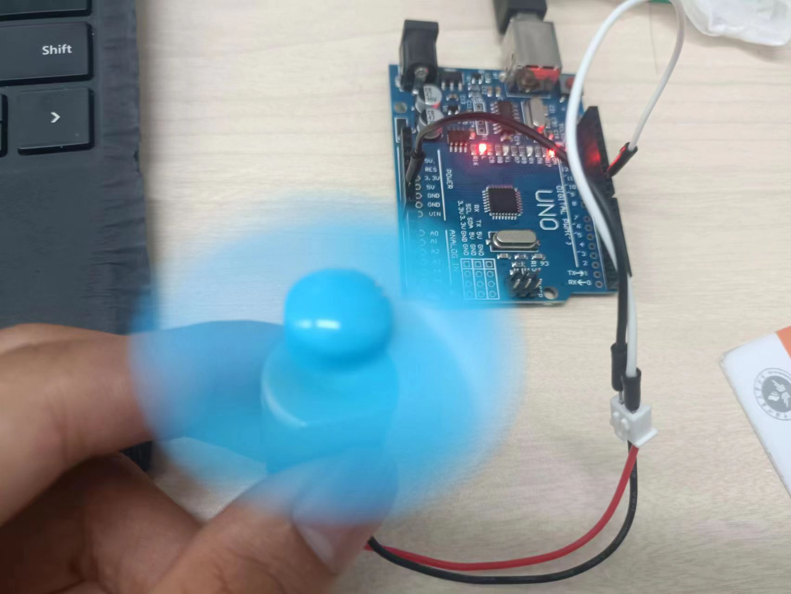
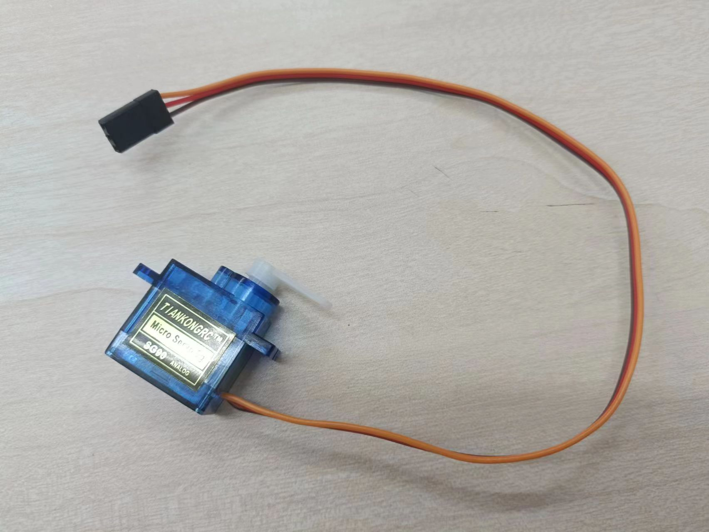
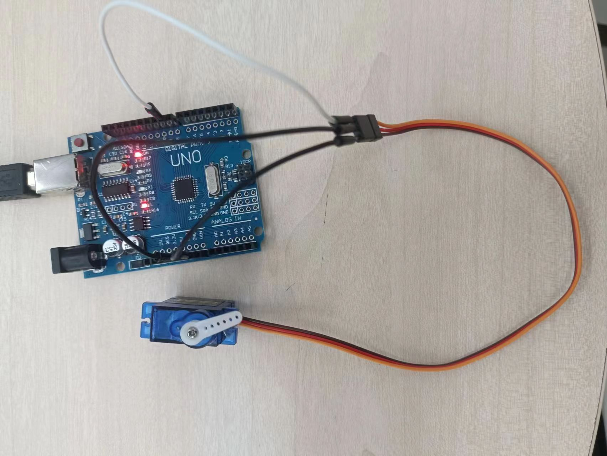

arduino的系统学习
我还是决定系统学一下arduino，虽然系统学，但仍是速成，由于碰到一些事情我意识到自己还不够努力，就从arduino开始吧
arduino IDE下载
arduino uno引脚图

Arduino UNO是基于ATmega328P的Arduino开发板。它有14个数字输入/输出引脚（其中6个可用于PWM输出）、6个模拟输入引脚，一个16 MHz的晶体振荡器，一个USB接口，一个DC接口，一个ICSP接口，一个复位按钮。它包含了微控制器所需的一切，你只用简单地把它连接到计算机的USB接口，或者使用AC-DC适配器，再或者用电池，就可以驱动它。
存储空间
ATmega328 有32KB Flash存储空间（其中0.5KB被用于存储bootloader），2KB 的SRAM和1KB 的EEPROM。
可以使用官方提供的EEPROM库读写EEPROM空间。
输入输出
Arduino Uno有14个数字输入输出引脚，可使用 pinMode()、digitalWrite() 和 digitalRead() 控制。
其中一些带有特殊功能，这些引脚如下
Serial
0（RX）、1（TX），被用于接收和发送串口数据。这两个引脚通过连接到ATmega16u2来与计算机进行串口通信。
外部中断
2、3，可以输入外部中断信号。中断有四种触发模式：低电平触发、电平改变触发、上升沿触发、下降沿触发。
PWM输出：
3、5、6、9、10、11，可用于输出8-bit PWM波。对应函数 analogWrite() 。
SPI：
10（SS）、11（MOSI）、12（MISO）、13（SCK），可用于SPI通信。可以使用官方提供的SPI库操纵。
L-LED：
13。13号引脚连接了一个LED，当引脚输出高电平时打开LED，当引脚输出低电平时关闭LED。
TWI：
A4（SDA）、A5（SCL）和TWI接口，可用于TWI通信，兼容I²C通信。可以使用官方提供的Wire库操纵。
点亮一个LED灯
点灯大师，闪亮登场
LED灯正负两端会有2v的电压差
pinMode(引脚号，状态) 设置引脚模式
- 输出(OUTPUT)
- 输入(INPUT)
- 输入上拉模式(INPUT_PULLUP)
digitalWrite(引脚号,状态); 引脚输出状态
- HIGH(高电平)
- LOW(低电平)
上拉电阻
arduino开发板上拉电阻10K
引脚悬空
引脚设置成INPUT却没有加任何电路，引脚检测状态不定（0/1）
1 | |

串口通信
digitalRead(引脚号)
读取某个引脚状态，常与pinMode(引脚号,INOUT)搭配使用
Serial.begin(9600);
串口初始化设置9600为常用波特率
Serial.println(打印内容);
在电脑的串口监视器上输出相应内容
delay(时间)
延时函数，单位为ms
1 | |

模拟输出
标有~的数字引脚可输出PWM信号
analogWrite(Pin,bringtness)
模拟输出，Pin,引脚号; brigngness为亮度范围0~255,
输出的为Pwm信号，PWM信号的频率大约为490Hz.
在Arduino UNO控制器中，5号引脚和6号引脚的PWM频率为980Hz。
呼吸灯（周期未测）
1 | |
模拟输入
电位器

ananaloRead(Pin)
读取范围0-5v,返回0~1023的数值，读入的最大频率为10 000次，引脚悬空状态读的数值不定
变量B = map(变量A,A_min,A_max,B_min,B_max)
将变量A等比映射到变量B
1 | |
电机驱动
电机种类
- 直流电机(DC)
- 交流电机(AC)
- 交直流两用电机(Universal)
使用arduino的引脚直接驱动直流电机
简直蠢爆了，引脚输出电流不够,pwm给小了根本不动，当然，这里只是验证analogWrite是PWM信号，周期490Hz
1 | |

舵机驱动
普通舵机有3根线：GND（黑）、VCC（红）、Signal（黄），一般情况下，建议为舵机单独供电，此处实验为了图方便，用arduino为舵机供电。

1 | |

步进电机驱动
步进电机优点
- 精准控制电机输出轴角度
- 低速运行时扭矩大
- 开环控制/性价比高
步进电机的分类
- 单极性步进电机 5-6条引脚，相对输出扭矩低，控制简单
- 双极性步进电机 4条引脚，相对输出扭矩高，控制复杂
步进电机的参数
- 额定电流
- 额定电压
- 定位转矩 不通电
- 保持转矩 通电
- 相数 可独立通电的定子电磁线圈数
步进电机详解